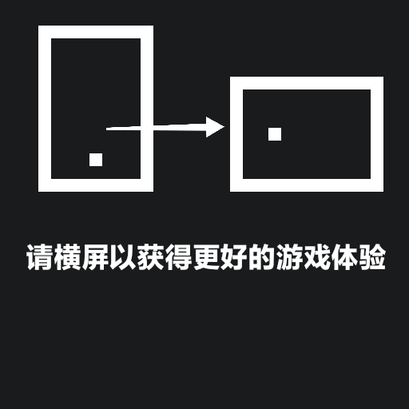

<!DOCTYPE html>
<html>

<head lang="en">
  <meta charset="utf-8" name="viewport" content="width=device-width, initial-scale=1, maximum-scale=1, user-scalable=no">

  <title>无限开拓</title>
  <script src="./libs/phaser3.55.2/phaser.js"></script>
  <script src="./libs/GlobalVariables.js"></script>
  <script src="./libs/jquery.js"></script>
  <script src="mapManager.js"></script>
  <script src="GamePlay.js"></script>
  <script src="./libs/perlin.js"></script>
  <script src="areaConfig.js"></script>
  <script src="gameSupport.js"></script>
  <script src="itemManager.js"></script>
</head>

<style>
    body{
      background-color:#1A1B1C;
    }
    
    #rotation{
      width: 100%;
      
    }
  
</style>

<body>
  <div id="game"></div>
  <script>
  sw=window.screen.width;
  sh=window.screen.height;
  if(sw<=sh){$("body").append("</img>");}else{document.location.href = "game.html";}
  
  
  window.addEventListener('resize', checkswsh);
  function checkswsh(){
      setTimeout(function (){
      sw=window.screen.width;
      sh=window.screen.height;
      if(sw>sh){document.location.href = "game.html";}
      },1000);
  }
  
    
  </script>
</body>

</html>